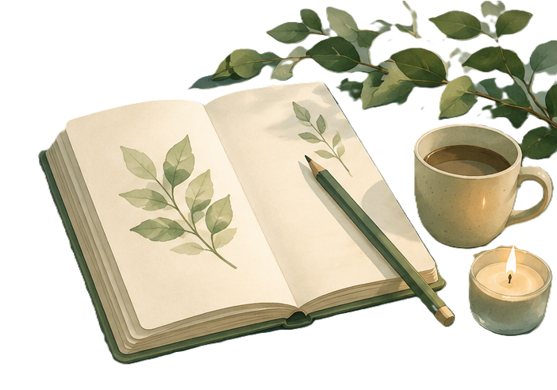

1. 開始作畫
先選一個貼近當下心情的顏色，隨手在畫板塗鴉，無須擔心畫得像不像。
ArtEcho 是一個結合治癒感的創作空間，
你可以在作畫中與自己對話、抒發、療癒，
陪伴你把今天的情緒存成作品，慢慢照顧成長的過程。

先選一個貼近當下心情的顏色，隨手在畫板塗鴉，無須擔心畫得像不像。
替這段情緒命名，為它說一個名字，幫助你更靠近內在感受。
將作品收藏起來，日後再看一看，感受自己如何慢慢變好。

本方案提供 15歲至 45歲民眾心理諮商補助，幫助你獲得對話的力量，陪伴你慢慢好起來。
點擊畫廊內的生物可以觀看牠們的名字，過 5 秒後會自動隱藏
請選擇一個想要欣賞或創作的主題生態系